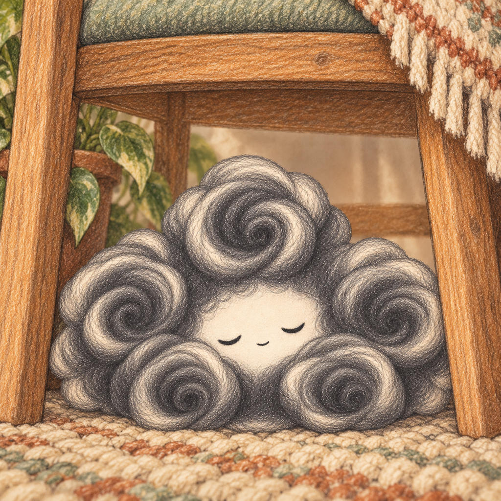

LITTLE DISCOVERIES / REAL ROOMS
A little help
for a little hunt.
HUSH is a cozy game about imaginary creatures hiding in your real room. Your scanner briefly reveals LiDAR returns; your field notebook gives each discovery a place to stay.
Which devices can play?
You need an iPhone equipped with LiDAR and iOS 18 or later. Not every iPhone includes LiDAR. The game checks for compatible hardware when entering your room. This first release is intended for iPhone.
Where should I play?
Choose a well-lit room with clear, safe space to move. Look around as you change your viewing angle and keep real obstacles in mind. HUSH uses ARKit visual tracking and LiDAR; darkness can prevent reliable tracking. The game cannot see through furniture or walls.
How do I find a creature?
Tap the main scan control for one pulse. The smaller AUTO control sends three or five spaced pulses. Compare the point cloud with what you see in the room. Follow brighter traces and move to another measured angle to reveal a creature behind cover.
Why did it slip away?
A scan or a close approach can startle a creature. Stay within its capture range, aim at a visible return and hold the capture control. Rarer finds can require another attempt. A miss or an out-of-range attempt does not spend a capture charge.
How do charges and visitors work?
A successful capture uses one charge. One returns every four hours, up to three. The room's residents stay consistent within their refresh period, including if the app is restarted. They refresh every four hours; an additional weighted visitor is due every six hours. Optional reminders are local game timers.
Can I keep or share a discovery?
Your notebook saves the creature's portrait, individual details and a capture point-cloud snapshot. You can replay the scan and copy or share an illustrated keepsake. Keepsakes do not include the room point cloud.
Ads, purchases and accounts?
The first release is a free download with no ads or in-app purchases. No account is required. App Store release is currently in preparation.
Need more help?
Include your app version, iPhone model and a short description. Room photos and scans are not needed for ordinary support.